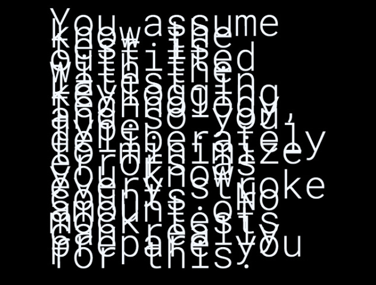

Fei Liu is a designer, artist, writer and DJ exploring digital empathy, and the narrative potential of interfaces.

2016
New Mercy Park is a transmedia educational tool that is part narrative experience, part alternate reality game, part poetry, and part software tutorial, resulting in an experience that spans months and takes place across chat boxes, emails, and other internet platforms.
Its my continued research into the potential for the web browser as an interface layer for performance and theater. Ever since the age of AOL CD-roms, I have been participating in the crafting of stories threading through email chains, chatrooms, and instant messages. And partially inspired by Neal Stephenson's The Diamond Age: Or, A Young Lady’s Illustrated Primer an imperiled future Earth.